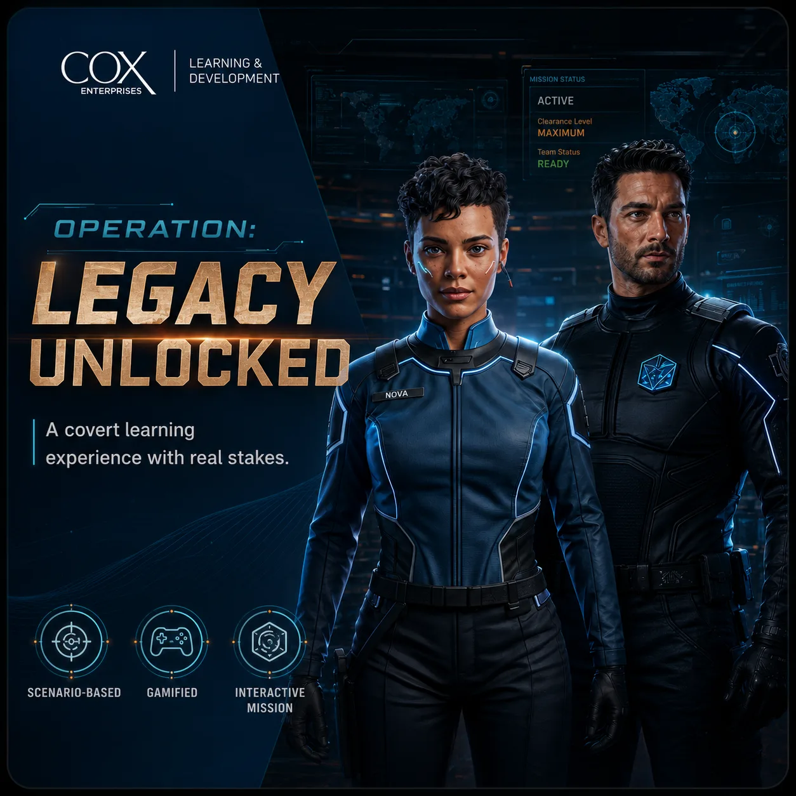
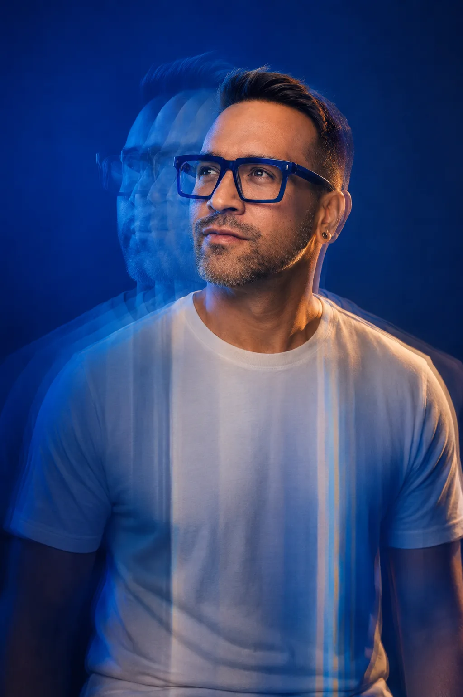

01Leadership developmentCox Enterprises
Operation: Legacy Unlocked
An immersive leadership simulation that casts employees as intelligence agents and turns organizational history into a mission, built for audiences up to VP and SVP.
I turn complex business and learning challenges into experiences people can understand and use—from strategy and experience design to film, AI-enabled production, and the finished build.
Learning Strategy • Experience Design • Creative Technology • Film & Media
Selected experience
EducationM.Ed., Instructional Design & Technology, Arizona State University
Selected case studies · 05
Leadership, product, and platform change for enterprise teams, each shown from the problem to the shipped experience.
Creative Lab · Film & creative technology
Self-directed film and AI-assisted production where I test the storytelling, cinematography, and tools I later bring into enterprise work.
Start with The Train Story, then open the systems map to see how narrative, sound, and light were engineered beat by beat.
Lab Entry 01 / AI Production
The Train Story is an experimental cinematic prototype created to explore how generative AI can support a complete visual-production workflow. The concept was structured and refined through Claude, developed visually through Gemini, and translated into motion through Omni. Rather than treating each platform as an isolated tool, I directed them as one connected production system—from concept and narrative framing to visual language, scene development, and final animation.
The film draws inspiration from the architectural tension, psychological scale, and layered reality associated with Christopher Nolan's cinema, particularly Inception. The objective was not to reproduce that film, but to study how its atmosphere, pacing, visual gravity, and sense of impossible space could inform an original AI-enabled experiment. This piece is one example of how I combine creative direction, systems thinking, storytelling, and emerging technology to move an idea from imagination into a tangible cinematic experience.
Artifact / Systems Map
A time-based breakdown of how narrative architecture, visual world building, cinematography, audio, and learning integration interact across the sequence.
Key Moment / Threshold
The threshold moment visualizes the transition from disruption to decision. Through amber light, silence, and a single piano note, the sequence marks a deliberate shift in emotional and narrative direction — held for three seconds, 0:54–0:57.
Selected impact
Outcomes from enterprise programs I designed or contributed to. Detail sits in each case study.
Adoption
0%
Platform adoption in Q1, supported through targeted enablement
Workday Learn launch · Cox Enterprises
Production
0%
Faster content development using an AI-assisted production pipeline, adopted team-wide
Learning production · Cox Enterprises
Leadership
0%
Lift in strategic knowledge retention versus presentation formats
Cox 20/20 executive simulation
Migration
0%
Adoption and 4.9/5 satisfaction on an organization-wide LMS migration
Digital learning function · Atlanta International School
Experience
0+ yrs
Designing learning across corporate, technology, and education environments
Thinking in Motion
A design perspective on how narrative structure, visual rhythm, emotional relevance, and multimedia storytelling can make learning more memorable, human, and actionable.
I approach learning design like a narrative system. Every experience needs rhythm, tension, clarity, visual pacing, and a purposeful arc. Whether I am building an executive explainer, a leadership simulation, a product enablement toolkit, or an interactive eLearning module, I use cinematic principles to help learners move from attention to understanding — and from understanding to action.
Story arc
Context
Establish the situation people are actually working inside.
Tension
Name the friction that makes the change hard.
Clarity
Resolve complexity into a decision people can hold.
Action
Move understanding into confident behavior.
Featured Insight
An emerging design perspective on how narrative structure, visual rhythm, emotion, AI-enabled production, and multimedia storytelling can help people understand complex change and act with confidence.
AI + Practice
Speed expands the options. Judgment protects the outcome.
Design Judgment
Practice should strengthen decisions — not test compliance.
Systems Thinking
Adoption succeeds when the whole environment supports the behavior.
Practice
Five moves I run on every project, from a leadership simulation to a platform launch to an AI-assisted production run. Each carries a rule I don't break.
Define the business problem, learner need, stakeholder expectations, and success criteria.
Clarity over complexity. Every complex problem hides a simpler structure worth finding first.
Organize complexity into a learning architecture, journey, content map, or enablement strategy.
People before platforms. Technology only matters once the people using it can succeed with it.
Shape the experience through story, interaction, visuals, accessibility, and human-centered learning principles.
Technology should feel human. Systems earn adoption when they respect attention, context, and effort.
Produce eLearning, video, guides, toolkits, job aids, and communications. Prototype early, then scale.
Speed for production, not decisions. AI expands what is possible; the point of view stays mine.
Use feedback, adoption signals, performance evidence, and stakeholder input to refine impact.
Learning should move behavior. The measure is what people do differently after.
Capabilities & tools
Capability first. Open any row for the tools I use to deliver it; depth varies from daily practice to emerging workflows.
Miro, FigJam, Tableau, Power BI, learning dashboards, KPI and adoption tracking, survey analysis
Workday Learn, SharePoint, Microsoft 365, Asana, Frame.io, LMS governance, release workflows
Articulate Storyline 360, scenario and branching design, simulations, facilitation kits
ChatGPT, Claude, Gemini, Copilot, NotebookLM, Custom GPTs, Zapier, Make, n8n, Synthesia, ElevenLabs, HeyGen, Descript, Runway
Storyline 360, Rise 360, Camtasia, Genially, H5P, Canvas LMS, Premiere Pro, After Effects, Photoshop, Illustrator, Figma
WCAG, UDL, accessibility checkers, captioning and SRT workflows, screen-reader and contrast checks, QA checklists
Every output is reviewed and owned. Nothing ships that I wouldn't defend in front of a stakeholder.
About
I learned that early, guiding educators and communities through digital learning and platform change. It still shapes everything I make, from leadership simulations to release-ready product training.
The problems I'm handed rarely stay inside one discipline, so neither do I. I structure the ambiguity, design the experience, then film, prototype, and build it, using AI to move faster without handing it the judgment.
Digital learning adoption with educators, where designing for real behavior change began.
Guiding communities through platform change.
Leadership and enterprise learning for audiences from frontline teams to SVPs.
Release-ready learning that keeps global teams operationally current.
Make the complex clear, make the learning useful, and make the experience worth remembering.

“I translate complexity into learning people can use.”
Jonathan Iker Zamarripa · Learning Experience Design & Strategy
Selected Additional Work
Projects that show range across interactive learning, multimedia, and AI production. Summarized here; the full archive holds more.
View the Full Archive (older site)Interactive eLearning
Branching practice built for bilingual learners, grounded in accessibility practice and learner-centered storytelling.
Education Innovation
Professional learning and adoption strategy that moved faculty from hesitation to fluency.
Multimedia
Short-form motion pieces that compress dense process into minutes.
AI Experiments
Prompt systems and agentic drafts tested against real production work.
Enterprise Learning
Job aids and facilitation kits supporting manager capability at scale.
Contact
A strategy that needs shape, an experience that needs building, a story that needs telling, or a new tool worth figuring out. Tell me what you’re working on. I’m currently open to senior full-time roles.
Or use the form. A few lines are enough; I reply personally.